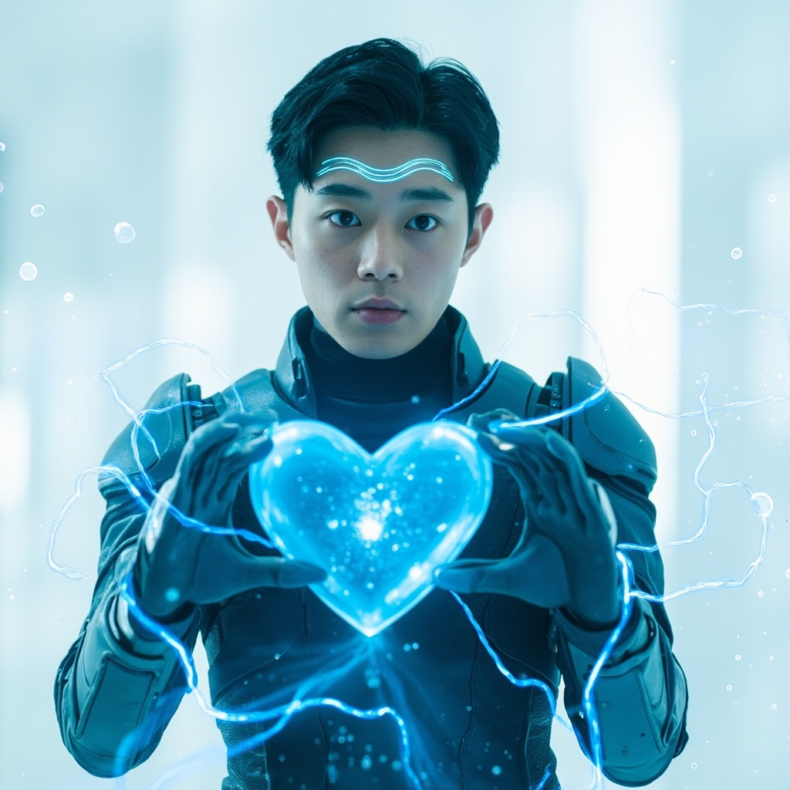
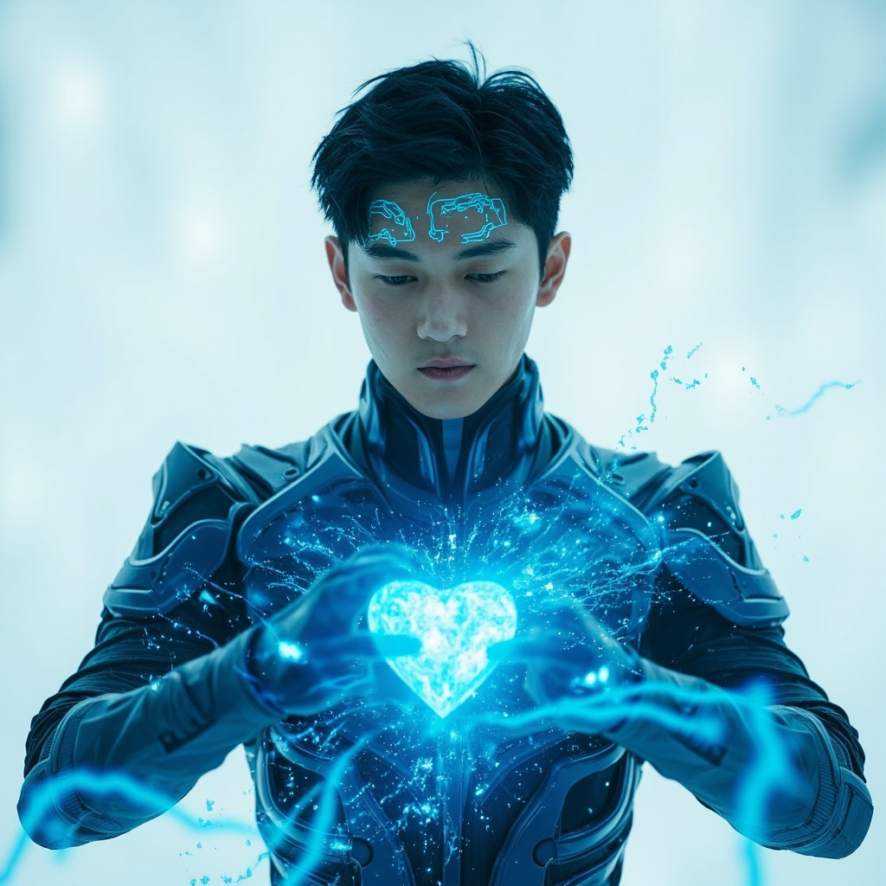
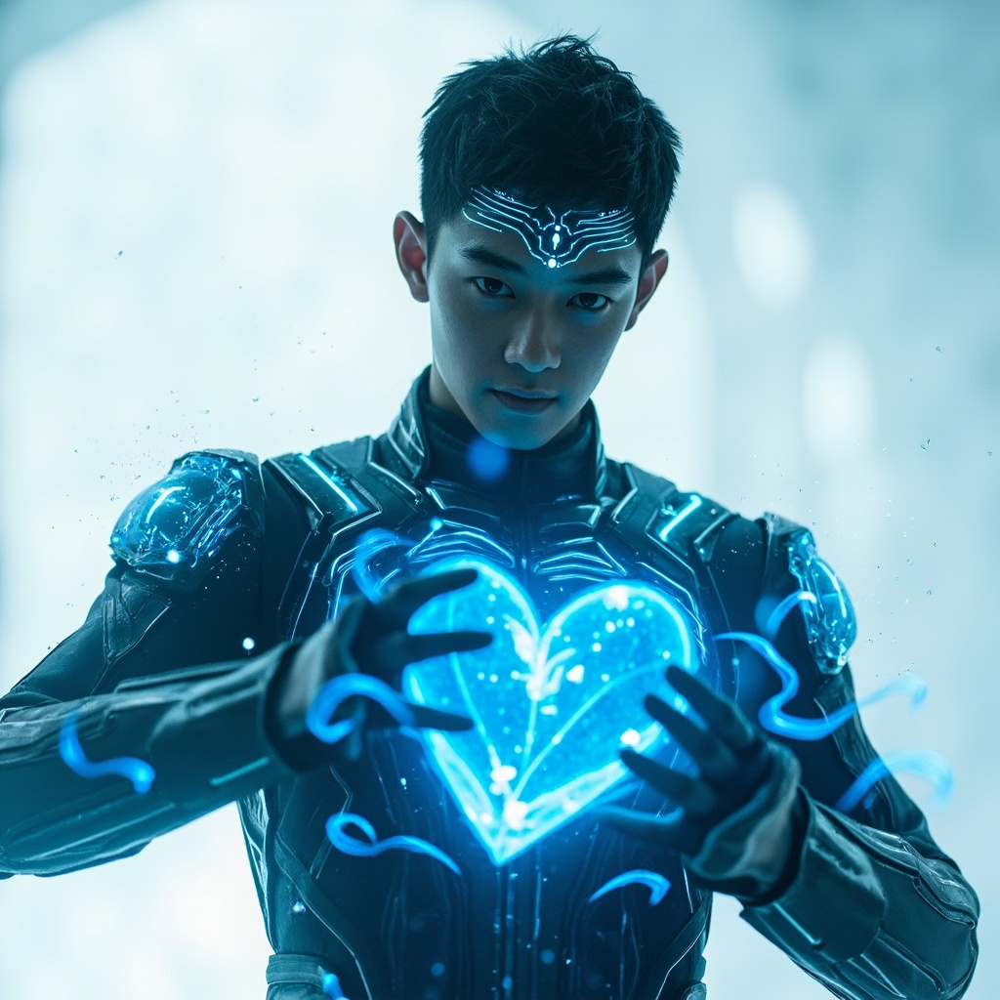
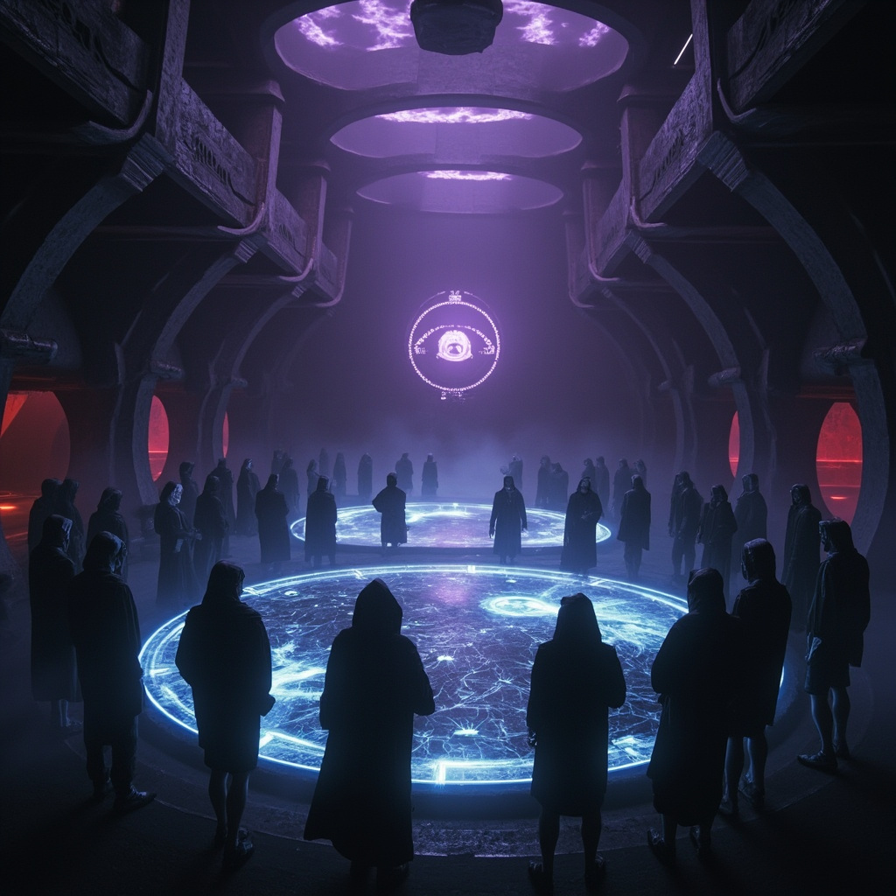

場景一
純白虛空
林塵睜開眼睛時，發現自己站在一片純白的空間中。四週沒有任何參照物，只有無盡的白色延伸至視野盡頭。他低頭看向自己的雙手，紋理清晰，觸感真實。這不是普通的虛擬現實——靈芯系統顯示這是高維度數據流動的量子疊加態虛擬空間，真實度高達99.7%。

場景二
織網者現身
白色空間開始變化，地面浮現出複雜的電路紋路，藍色數據流如溪水般流淌。一個由光粒子凝聚而成的人形輪廓出現——沒有五官，身體表面流動著不斷變化的數據流。它自我介紹為「織網者」，靈網的守護意識，並告訴林塵他是三百年來第一個觸及核心權限的修真者。

場景三
記憶水晶球
場景轉換為宏偉的殿堂，由半透明的數據晶體構成，中央懸浮著一顆巨大的水晶球，流轉著星河般的光點——這是靈網的記憶核心，儲存著上個修真文明的全部知識。林塵伸手觸碰的剎那，海量信息湧入意識，他看見了「靈氣復蘇」的真相。

場景四
通天塔使命
織網者交付林塵建造「通天塔」的任務——這座塔將成為靈網在現實世界的錨點，融合修真陣法與量子傳輸技術。一枚光點從水晶球飛出，落入林塵掌心展開成三維結構圖。同時，七位合適的協助者名單已傳入他的意識。

場景五
回歸與抉擇
虛擬空間崩塌，林塵在實驗室中醒來，手中握著實體化的數據晶片。蘇婉告知他監測到腦波異常。望向窗外，他看見城市間流動的靈氣薄霧。他宣布了建造通天塔的計劃，但首先必須警惕「天機閣」——意圖控制靈網的秘密組織。林塵踏上成為兩個文明橋樑的道路。